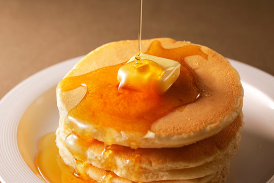

Pancakes are a delicious and versatile dish enjoyed around the world. They can be served as a sweet breakfast or a savory meal, depending on the toppings and ingredients used.
Historically, pancakes date back to ancient times and were often made with simple ingredients like flour, water, and eggs. Today, recipes have evolved to include a variety of flavors and textures.
The US is known for its fluffy pancakes, often served with maple syrup and butter. In contrast, French crêpes are thin and delicate, ideal for both sweet and savory fillings.
To achieve the perfect pancake, it’s important to measure your ingredients accurately and mix the batter until just combined. Overmixing can lead to dense and rubbery pancakes.
Cooking pancakes requires a well-heated skillet. A drop of water should sizzle when it hits the surface, indicating the correct temperature.
Finally, pancakes are best enjoyed fresh off the griddle. Serve them with your favorite toppings like fresh fruit, whipped cream, or chocolate syrup.
